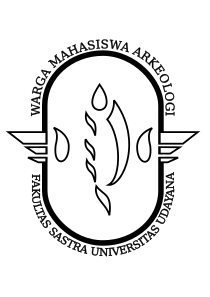

VISISamani Ghacanti Samani Jayanti yang berarti Berjalan Bersama Berjaya Bersama MISI
|

LAMBANGWARMA mempunyai lambang berbentuk oval yang memiliki arti persahabatan, kesatuan, stabilitas, dan daya tahan. Di dalam bentuk oval terdapat Sangka yang merupakan simbol Dewa Wisnu yang berarti pelindungan dan pemeliharaan. Sayap di sisi kiri dan kanan memiliki arti kebebasan berkreativitas. |
Bidang yang bertanggung jawab dalam hal-hal yang berhubungan dengan penalaran dan penelitian studi Arkeologi.
Bidang yang bertanggung jawab dalam menjalin hubungan dengan pihak internal (WARMA) dan eksternal (di luar WARMA).
Bidang yang bertanggung jawab dalam hal pendataan peralatan dan perlengkapan WARMA.
Bidang yang berfungsi sebagai wadah atau sarana penyalur minat dan bakat anggota WARMA
Bidang yang bertanggung jawab dalam penggalangan dana, baik dalam bentuk usaha, atau lainnya demi kepentingan WARMA